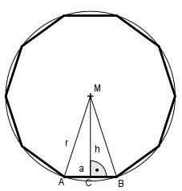

Aufgabe 210 Der Umfang einer Weide in Form eines regelmäßigen Zehnecks beträgt 45 m. Wie groß ist ihre Fläche A?

U 45 m Seitenlänge a = ---- = ------- = 4,5 m 10 10 Ergebnis von Aufgabe 106: Radius des Umkreises r: a 4,5 m r = --- * (√5 + 1) = -------- *(√5 + 1) = 7,3 cm 2 2 Satz von Pythagoras in dem Teildreieck ACM: a r2 = h2 + (---)2 2 4,5 7,32 = h2 + (-----)2 2 53,3 = h2 + 5,1 |-5,1 h2 = 48,2 |√ h = 6,9 m 6,9 m * 4,5 m A = 10 * --------------- = 155,3 m2 2